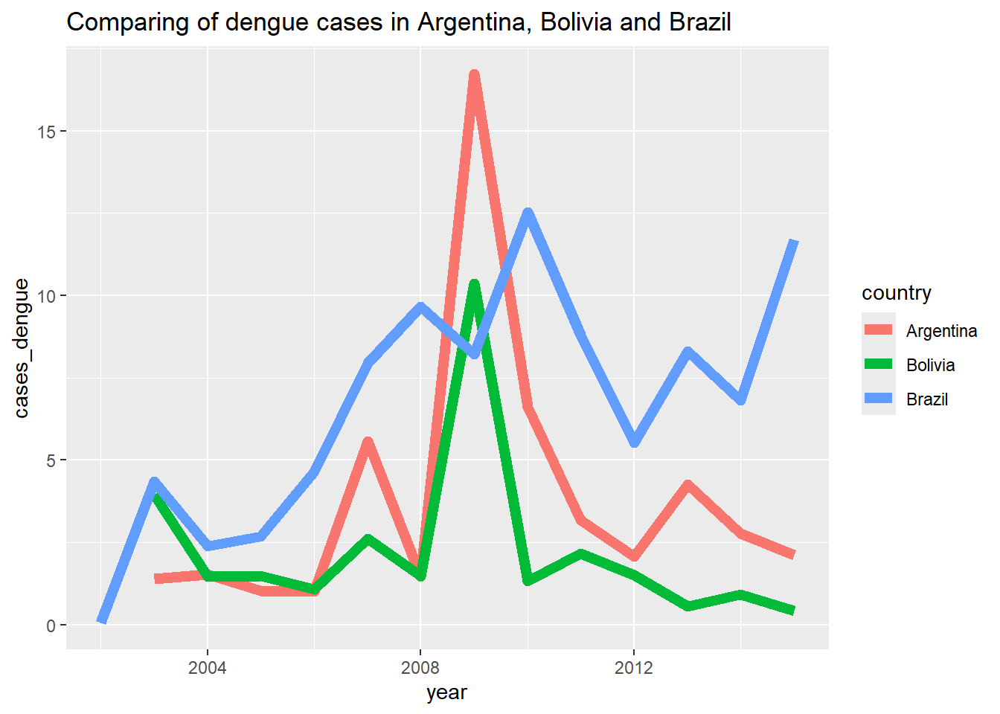
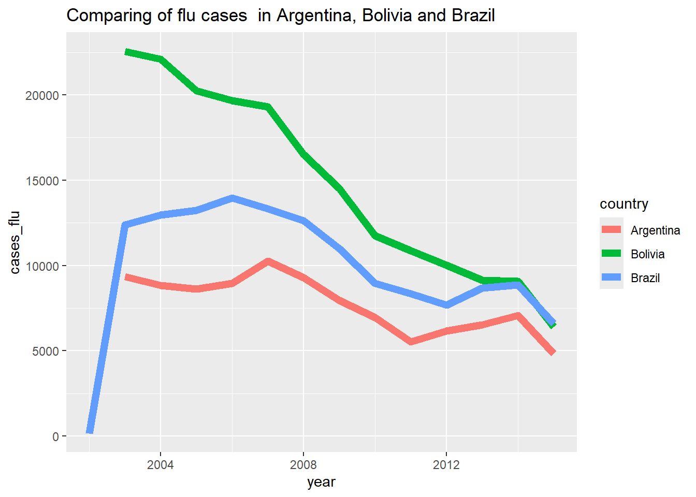
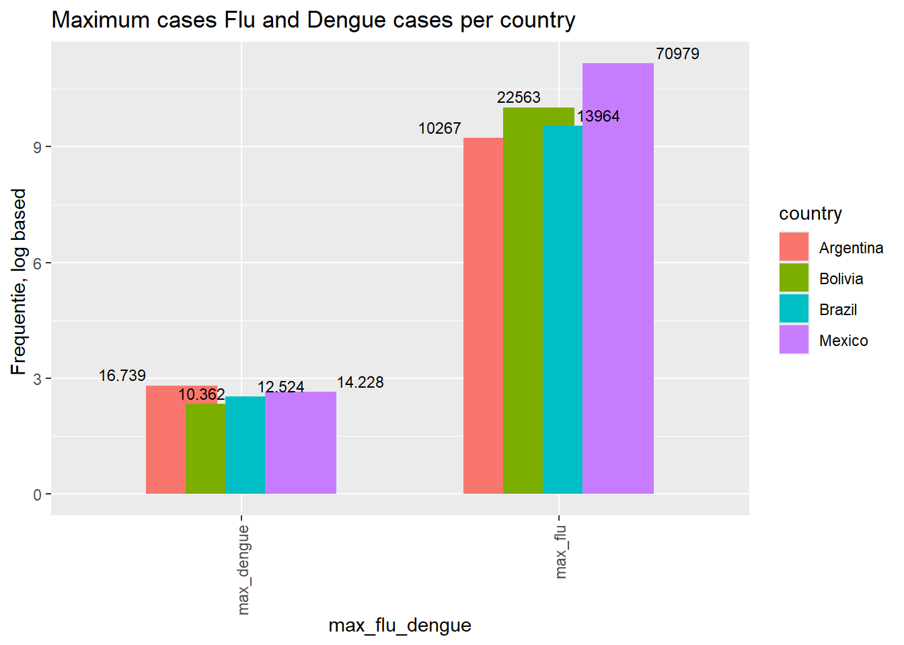
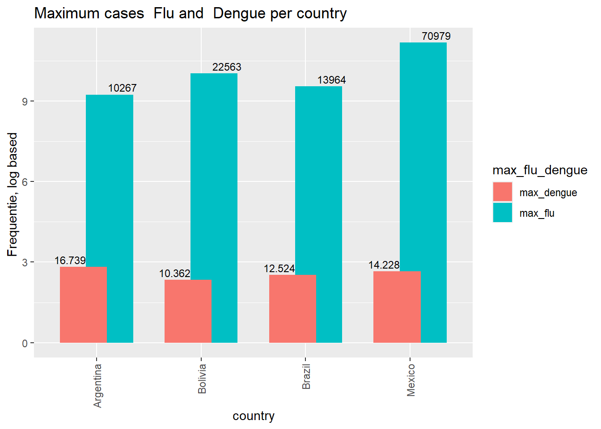
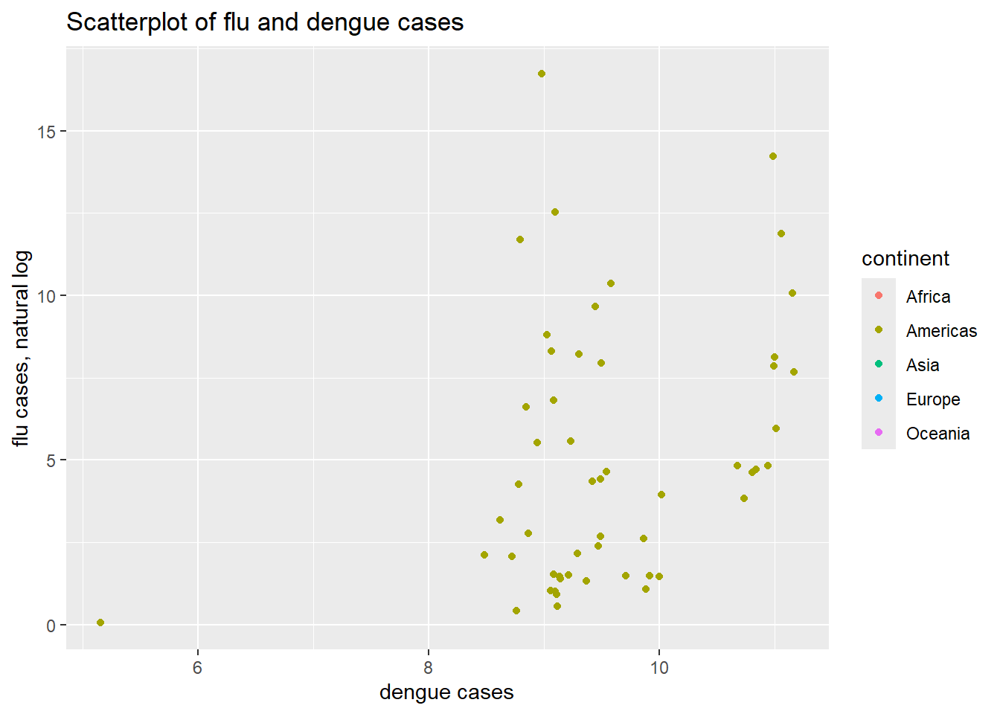

Chapter 8 Working with relational databases
Portfolio assignment 7.Relational databases
Assignment
Load the flu (in the github repo for this course: https://github.com/DataScienceILC/tlsc-dsfb26v-20_workflows go to ./data/flu_data.csv), the dengue (“./data/dengue_data.csv) and the gapminder ({dslabs} package) into three separate dataframes in R
Check if they are in the right shape. Is the data in the ‘tidy’ format? If not change the format to ‘tidy’
Change the country and date variables of the three tables so that they coincide in terms of data type, class and values
Store the three tables as separate (so six in total) .csv and .rds files.
In Dbeaver create a new PostgreSQL database “workflowsdb”
Using RPostgreSQL, insert the tables into the database.
Inspect the contents of the tables with SQL (in DBeaver) and save the SQL script.
Inspect the contents of the tables with dplyr (in R) and save a RMarkdown showing what you are doing.
Load the gapminder data in R and change the dataframe in such as way that you could join it to dengue and flue.
Save this clean gapminder data in the “workflowsdb” database
Perform some joins (your choice) with SQL (can be done in DBeaver or with dplyr.
Generate a joined table, and export this from the database to R.
Show some descriptive statistics with this table, and at least 3 visualisations using ggplot2.
Write a short report to show at least te actions listed in this assignment in a Rmd file for your portfolio. Include pictures and provide text explaining and showcasing your skills.read in Flu dataset
## [1] "Date" "Argentina" "Australia" "Austria"
## [5] "Belgium" "Bolivia" "Brazil" "Bulgaria"
## [9] "Canada" "Chile" "France" "Germany"
## [13] "Hungary" "Japan" "Mexico" "Netherlands"
## [17] "New.Zealand" "Norway" "Paraguay" "Peru"
## [21] "Poland" "Romania" "Russia" "South.Africa"
## [25] "Spain" "Sweden" "Switzerland" "Ukraine"
## [29] "United.States" "Uruguay"read in Dengue dataset
## [1] "Date" "Argentina" "Bolivia" "Brazil" "India"
## [6] "Indonesia" "Mexico" "Philippines" "Singapore" "Thailand"
## [11] "Venezuela"Read in dslabs gapminder dataset
## country year infant_mortality life_expectancy fertility
## 1 Albania 1960 115.40 62.87 6.19
## 2 Algeria 1960 148.20 47.50 7.65
## 3 Angola 1960 208.00 35.98 7.32
## 4 Antigua and Barbuda 1960 NA 62.97 4.43
## 5 Argentina 1960 59.87 65.39 3.11
## 6 Armenia 1960 NA 66.86 4.55
## population gdp continent region
## 1 1636054 NA Europe Southern Europe
## 2 11124892 13828152297 Africa Northern Africa
## 3 5270844 NA Africa Middle Africa
## 4 54681 NA Americas Caribbean
## 5 20619075 108322326649 Americas South America
## 6 1867396 NA Asia Western Asia## 'data.frame': 10545 obs. of 9 variables:
## $ country : Factor w/ 185 levels "Albania","Algeria",..: 1 2 3 4 5 6 7 8 9 10 ...
## $ year : int 1960 1960 1960 1960 1960 1960 1960 1960 1960 1960 ...
## $ infant_mortality: num 115.4 148.2 208 NA 59.9 ...
## $ life_expectancy : num 62.9 47.5 36 63 65.4 ...
## $ fertility : num 6.19 7.65 7.32 4.43 3.11 4.55 4.82 3.45 2.7 5.57 ...
## $ population : num 1636054 11124892 5270844 54681 20619075 ...
## $ gdp : num NA 1.38e+10 NA NA 1.08e+11 ...
## $ continent : Factor w/ 5 levels "Africa","Americas",..: 4 1 1 2 2 3 2 5 4 3 ...
## $ region : Factor w/ 22 levels "Australia and New Zealand",..: 19 11 10 2 15 21 2 1 22 21 ...Processing of FLU dataset
flu_longer <- pivot_longer(flu, cols= -Date, names_to = "country", values_to ="flu_cases", values_drop_na = TRUE)
head(flu_longer)## # A tibble: 6 × 3
## Date country flu_cases
## <chr> <chr> <int>
## 1 2002-12-29 Brazil 174
## 2 2002-12-29 Peru 329
## 3 2003-01-05 Brazil 162
## 4 2003-01-05 Peru 315
## 5 2003-01-12 Brazil 174
## 6 2003-01-12 Chile 1Fromat date, with year extraction
flu_longer$Date <- parse_integer( format(as.Date(flu_longer$Date), format="%Y") )
head(flu_longer$Date)## [1] 2002 2002 2003 2003 2003 2003## # A tibble: 6 × 3
## Date country flu_cases
## <int> <chr> <int>
## 1 2002 Brazil 174
## 2 2002 Peru 329
## 3 2003 Brazil 162
## 4 2003 Peru 315
## 5 2003 Brazil 174
## 6 2003 Chile 1Save unique rows
flu_longer2 <- flu_longer %>% group_by(Date, country) %>%
mutate( sum_cases = sum(flu_cases))
#View(flu_longer2)
head( flu_longer2)## # A tibble: 6 × 4
## # Groups: Date, country [5]
## Date country flu_cases sum_cases
## <int> <chr> <int> <int>
## 1 2002 Brazil 174 174
## 2 2002 Peru 329 329
## 3 2003 Brazil 162 12386
## 4 2003 Peru 315 20441
## 5 2003 Brazil 174 12386
## 6 2003 Chile 1 86## [1] "year" "country" "flu_cases" "sum_cases"Processing of Dengue dataset
dengue_longer <- pivot_longer(dengue, cols = -Date, names_to = "country", values_to = "dengue_cases",
values_drop_na = TRUE)
head(dengue_longer)## # A tibble: 6 × 3
## Date country dengue_cases
## <chr> <chr> <dbl>
## 1 2002-12-29 Bolivia 0.101
## 2 2002-12-29 Brazil 0.073
## 3 2002-12-29 India 0.062
## 4 2002-12-29 Indonesia 0.101
## 5 2002-12-29 Singapore 0.059
## 6 2003-01-05 Bolivia 0.143dengue_longer$Date <- parse_integer( format(as.Date(dengue_longer$Date), format="%Y") )
head(dengue_longer)## # A tibble: 6 × 3
## Date country dengue_cases
## <int> <chr> <dbl>
## 1 2002 Bolivia 0.101
## 2 2002 Brazil 0.073
## 3 2002 India 0.062
## 4 2002 Indonesia 0.101
## 5 2002 Singapore 0.059
## 6 2003 Bolivia 0.143dengue_longer <- dengue_longer %>% group_by(country, Date) %>% mutate(dengue_sum_cases = sum(dengue_cases))
head(dengue_longer)## # A tibble: 6 × 4
## # Groups: country, Date [6]
## Date country dengue_cases dengue_sum_cases
## <int> <chr> <dbl> <dbl>
## 1 2002 Bolivia 0.101 0.101
## 2 2002 Brazil 0.073 0.073
## 3 2002 India 0.062 0.062
## 4 2002 Indonesia 0.101 0.101
## 5 2002 Singapore 0.059 0.059
## 6 2003 Bolivia 0.143 3.94## [1] "year" "country" "dengue_cases" "dengue_sum_cases"## # A tibble: 130 × 3
## # Groups: country, year [130]
## year country dengue_sum_cases
## <int> <chr> <dbl>
## 1 2002 Bolivia 0.101
## 2 2002 Brazil 0.073
## 3 2002 India 0.062
## 4 2002 Indonesia 0.101
## 5 2002 Singapore 0.059
## 6 2003 Bolivia 3.94
## 7 2003 Brazil 4.34
## 8 2003 India 8.86
## 9 2003 Indonesia 3.15
## 10 2003 Singapore 6.85
## # ℹ 120 more rowsexport tables to csv and rds files
write.csv(flu_longer_db, "output/flu.csv")
write.csv( dengue_db, "output/ dengue.csv")
write.csv( gapminder, "output/gapminder.csv")
saveRDS(flu_longer_db, "output/flu.rds")
saveRDS( dengue_db, "output/dengue.rds")
saveRDS(gapminder, "output/gapminde.rds")Make connection to Postgres DB
## Loading required package: DBIlibrary("remotes")
library("RPostgres")
con <- dbConnect(RPostgres::Postgres(),
dbname = "workflowsdb",
host="localhost",
port="5432",
user="postgres",
password="admin")write tables to DB
dbWriteTable(con, "flu",flu_longer_db)
dbWriteTable(con, "dengue", dengue_db)
dbWriteTable(con, "gapminder", gapminder)
dbListTables(con)inspect the contents of the tables with SQL
| year | country | sum_cases |
|---|---|---|
| 2002 | Brazil | 174 |
| 2002 | Peru | 329 |
| 2003 | Brazil | 12386 |
| 2003 | Peru | 20441 |
| 2003 | Chile | 86 |
| 2003 | Argentina | 9352 |
| 2003 | Romania | 32769 |
| 2003 | Bolivia | 22563 |
| 2003 | Uruguay | 6445 |
| 2003 | Austria | 10178 |
| year | country | dengue_sum_cases |
|---|---|---|
| 2002 | Bolivia | 0.101 |
| 2002 | Brazil | 0.073 |
| 2002 | India | 0.062 |
| 2002 | Indonesia | 0.101 |
| 2002 | Singapore | 0.059 |
| 2003 | Bolivia | 3.945 |
| 2003 | Brazil | 4.344 |
| 2003 | India | 8.856 |
| 2003 | Indonesia | 3.147 |
| 2003 | Singapore | 6.854 |
Perform sql joins in DB:
- inner join flu and dengue:
CREATE TABLE flu_joined_dengue
AS
SELECT dengue.country, dengue.year , flu.sum_cases, dengue.dengue_sum_cases from dengue join flu on dengue.year = flu.year and dengue.country = flu.country;| country | year | sum_cases | dengue_sum_cases |
|---|---|---|---|
| Brazil | 2002 | 174 | 0.073 |
| Bolivia | 2003 | 22563 | 3.945 |
| Brazil | 2003 | 12386 | 4.344 |
| Mexico | 2003 | 13233 | 4.414 |
| Argentina | 2003 | 9352 | 1.397 |
| Argentina | 2004 | 8843 | 1.533 |
| Bolivia | 2004 | 22110 | 1.465 |
| Brazil | 2004 | 12964 | 2.380 |
| Mexico | 2004 | 45978 | 3.832 |
| Argentina | 2005 | 8627 | 1.035 |
Left join on gapminder to combined flu-dengue
select gapminder.country, gapminder.year, gapminder.infant_mortality , gapminder.life_expectancy , gapminder.continent, flu_joined_dengue.sum_cases ,flu_joined_dengue.dengue_sum_cases from gapminder left join flu_joined_dengue on flu_joined_dengue.year= gapminder.year and flu_joined_dengue.country =gapminder.country ;| country | year | infant_mortality | life_expectancy | continent | sum_cases | dengue_sum_cases |
|---|---|---|---|---|---|---|
| Albania | 1960 | 115.40 | 62.87 | Europe | NA | NA |
| Algeria | 1960 | 148.20 | 47.50 | Africa | NA | NA |
| Angola | 1960 | 208.00 | 35.98 | Africa | NA | NA |
| Antigua and Barbuda | 1960 | NA | 62.97 | Americas | NA | NA |
| Argentina | 1960 | 59.87 | 65.39 | Americas | NA | NA |
| Armenia | 1960 | NA | 66.86 | Asia | NA | NA |
| Aruba | 1960 | NA | 65.66 | Americas | NA | NA |
| Australia | 1960 | 20.30 | 70.87 | Oceania | NA | NA |
| Austria | 1960 | 37.30 | 68.75 | Europe | NA | NA |
| Azerbaijan | 1960 | NA | 61.33 | Asia | NA | NA |
Inspect data with R
## # Source: SQL [6 x 3]
## # Database: postgres [postgres@localhost:5432/workflowsdb]
## year country sum_cases
## <int> <chr> <int>
## 1 2002 Brazil 174
## 2 2002 Peru 329
## 3 2003 Brazil 12386
## 4 2003 Peru 20441
## 5 2003 Chile 86
## 6 2003 Argentina 9352## # Source: SQL [6 x 3]
## # Database: postgres [postgres@localhost:5432/workflowsdb]
## year country dengue_sum_cases
## <int> <chr> <dbl>
## 1 2002 Bolivia 0.101
## 2 2002 Brazil 0.073
## 3 2002 India 0.062
## 4 2002 Indonesia 0.101
## 5 2002 Singapore 0.059
## 6 2003 Bolivia 3.94## # Source: SQL [6 x 9]
## # Database: postgres [postgres@localhost:5432/workflowsdb]
## country year infant_mortality life_expectancy fertility population gdp
## <chr> <int> <dbl> <dbl> <dbl> <dbl> <dbl>
## 1 Albania 1960 115. 62.9 6.19 1636054 NA
## 2 Algeria 1960 148. 47.5 7.65 11124892 1.38e10
## 3 Angola 1960 208 36.0 7.32 5270844 NA
## 4 Antigua … 1960 NA 63.0 4.43 54681 NA
## 5 Argentina 1960 59.9 65.4 3.11 20619075 1.08e11
## 6 Armenia 1960 NA 66.9 4.55 1867396 NA
## # ℹ 2 more variables: continent <chr>, region <chr>Descriptive statistics
- Join: flu and dengue”
join2 <- read.csv("data/les5/join2.csv")
colnames(join2)[3] <- "cases_flu"
colnames(join2)[4] <- "cases_dengue"
head(join2)## country year cases_flu cases_dengue
## 1 Brazil 2002 174 0.073
## 2 Bolivia 2003 22563 3.945
## 3 Brazil 2003 12386 4.344
## 4 Mexico 2003 13233 4.414
## 5 Argentina 2003 9352 1.397
## 6 Argentina 2004 8843 1.533join2 %>% filter(country %in% c("Bolivia", "Brazil", "Argentina") ) %>%
ggplot(aes(x=year, y=cases_dengue, color=country)) +
geom_line(size=2.5)+
labs(title = "Comparing of dengue cases in Argentina, Bolivia and Brazil" ) ## Warning: Using `size` aesthetic for lines was
## deprecated in ggplot2 3.4.0.
## ℹ Please use `linewidth` instead.
## This warning is displayed once every 8
## hours.
## Call `lifecycle::last_lifecycle_warnings()`
## to see where this warning was generated.
join2 %>% filter(country %in% c("Bolivia", "Brazil", "Argentina") ) %>%
ggplot(aes(x=year, y=cases_flu, color=country)) +
geom_line(size=2.5)+
labs(title = "Comparing of flu cases in Argentina, Bolivia and Brazil" ) 
summary_table <- join2 %>% group_by(country) %>% summarise( max_flu=max(cases_flu), max_dengue=max(cases_dengue) )
join2_longer <-join2 %>% pivot_longer( cols = c("cases_flu","cases_dengue"),
names_to = "group", values_to ="cases" )
head(join2_longer)## # A tibble: 6 × 4
## country year group cases
## <chr> <int> <chr> <dbl>
## 1 Brazil 2002 cases_flu 174
## 2 Brazil 2002 cases_dengue 0.073
## 3 Bolivia 2003 cases_flu 22563
## 4 Bolivia 2003 cases_dengue 3.94
## 5 Brazil 2003 cases_flu 12386
## 6 Brazil 2003 cases_dengue 4.34# bar chart flu vs dengue
summary_table <- join2 %>% group_by(country) %>% summarise( max_flu=max(cases_flu), max_dengue=max(cases_dengue) )
summary_table## # A tibble: 4 × 3
## country max_flu max_dengue
## <chr> <int> <dbl>
## 1 Argentina 10267 16.7
## 2 Bolivia 22563 10.4
## 3 Brazil 13964 12.5
## 4 Mexico 70979 14.2summary_table_polt <- summary_table %>% pivot_longer(cols=c('max_flu', 'max_dengue'),
names_to='max_flu_dengue',
values_to='frequentie')
head(summary_table_polt)## # A tibble: 6 × 3
## country max_flu_dengue frequentie
## <chr> <chr> <dbl>
## 1 Argentina max_flu 10267
## 2 Argentina max_dengue 16.7
## 3 Bolivia max_flu 22563
## 4 Bolivia max_dengue 10.4
## 5 Brazil max_flu 13964
## 6 Brazil max_dengue 12.5ggplot (summary_table_polt, aes(x= max_flu_dengue, y=log(frequentie), fill=country )) +
geom_bar ( stat="identity", position = position_dodge(width = 0.5))+
labs(title="Maximum cases Flu and Dengue cases per country")+
ylab("Frequentie, log based " )+
theme(axis.text.x = element_text(angle = 90, vjust = 0.5, hjust=1))+
geom_text(aes(label = frequentie), size = 3, vjust = -0.4,position = position_dodge(width = 1) )
ggplot (summary_table_polt, aes(x= country, y=log(frequentie), fill=max_flu_dengue )) +
geom_bar ( stat="identity", position = position_dodge(width = 0.5))+
labs(title="Maximum cases Flu and Dengue per country")+
ylab("Frequentie, log based " )+
theme(axis.text.x = element_text(angle = 90, vjust = 0.5, hjust=1))+
geom_text(aes(label = frequentie), size = 3, vjust = -0.4,position = position_dodge(width = 1) )
Maximum dengue cases in Argenitina is : 16.739
Maximum flu cases in Mexico is : 14.228
Maximum flu cases in Brazil is: 12.524
Maximum flu cases in Bolivia is :10.362
There are thousands of times more cases of flu than dengue in all existing areas
Left join : gapminder and combined flu and dengue
## country year infant_mortality life_expectancy
## Length:10545 Min. :1960 Min. : 1.50 Min. :13.20
## Class :character 1st Qu.:1974 1st Qu.: 16.00 1st Qu.:57.50
## Mode :character Median :1988 Median : 41.50 Median :67.54
## Mean :1988 Mean : 55.31 Mean :64.81
## 3rd Qu.:2002 3rd Qu.: 85.10 3rd Qu.:73.00
## Max. :2016 Max. :276.90 Max. :83.90
## NA's :1453
## continent sum_cases dengue_sum_cases
## Length:10545 Min. : 174 Min. : 0.073
## Class :character 1st Qu.: 8676 1st Qu.: 1.513
## Mode :character Median :11752 Median : 4.344
## Mean :21412 Mean : 5.014
## 3rd Qu.:22110 3rd Qu.: 7.848
## Max. :70979 Max. :16.739
## NA's :10492 NA's :10492join1 %>%
ggplot(aes(x=log(sum_cases) , y=dengue_sum_cases, color=continent)) +
geom_point()+
labs(title = "Scatterplot of flu and dengue cases ", y= "flu cases, natural log", x="dengue cases" )## Warning: Removed 10492 rows containing missing
## values or values outside the scale range
## (`geom_point()`).
There is no positive or negative correlation between flu cases and dengue cases in all given countries (continent America )
Flu cases are several thousand times higher than dengue cases , with a maximum of 70,000 flue cases in Mexica. While the maximum number of dengue cases is 16, in Argentina